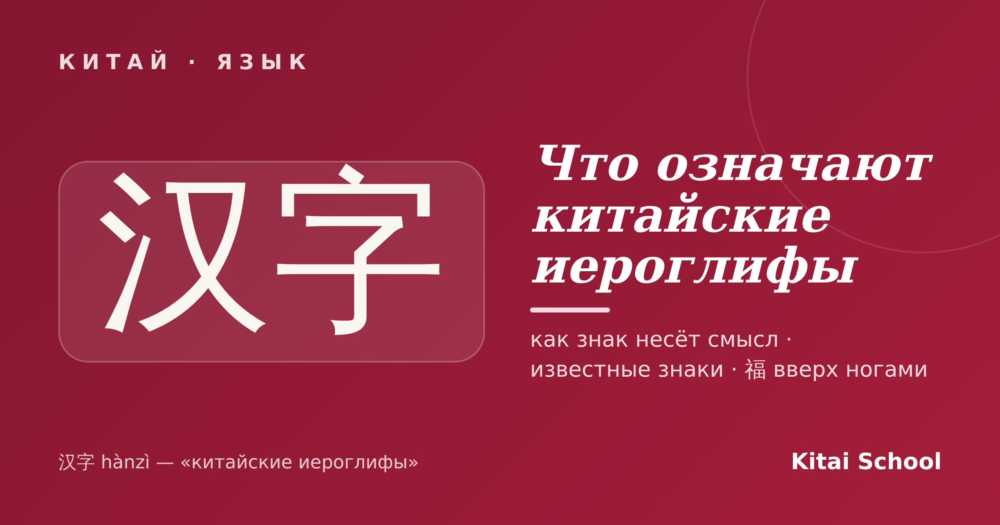
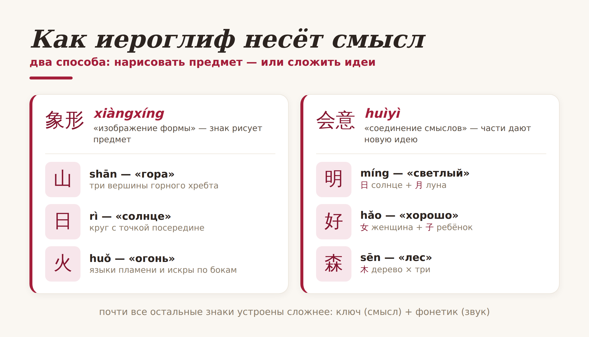
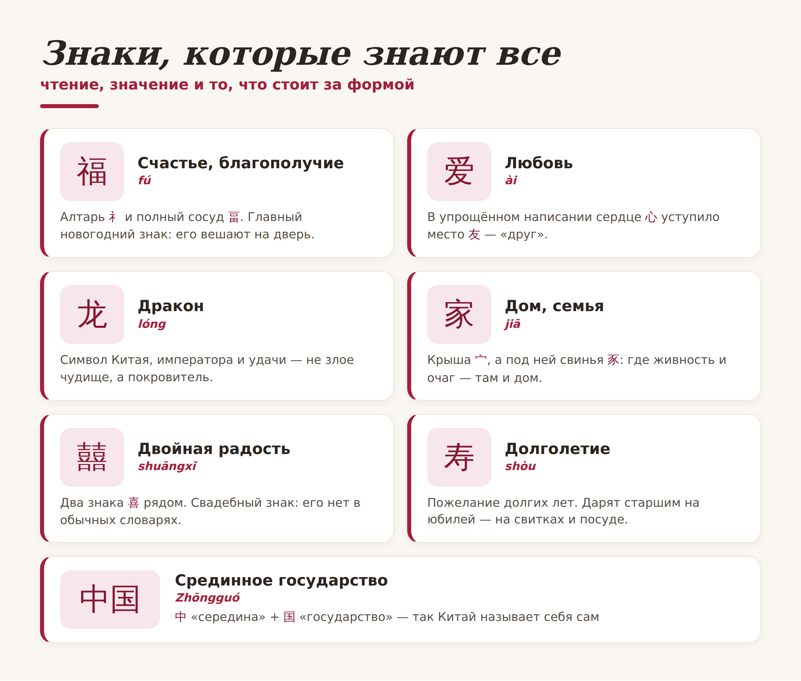

Китай · язык

Китайские иероглифы притягивают взгляд: их набивают как татуировки, вешают на стены, дарят на удачу. Но за красивой формой стоит конкретный смысл, а иногда — целая философия. Один знак способен уместить в себе то, на что нам нужна фраза.
Разберём самые известные иероглифы и узнаем, что они значат на самом деле — и заодно поймём, как знак вообще несёт смысл. Давайте по порядку.
Есть распространённый миф, что каждый иероглиф — это «рисунок». Отчасти правда: самые древние знаки действительно рисовали предмет. 山 (shān) — гора с тремя вершинами, 日 (rì) — солнце, 火 (huǒ) — язычки пламени. Такие знаки называют изобразительными, 象形 (xiàngxíng).
Но большинство иероглифов устроены хитрее: они складывают смысл из нескольких идей. 明 (míng) «светлый» — это солнце и луна вместе. Такие знаки называют идеографическими, 会意 (huìyì). Понимая это, вы смотрите на иероглиф не как на картинку, а как на маленькую формулу смысла.

Пожалуй, самый известный иероглиф в Китае — 福 (fú), «счастье, благополучие». Под Новый год его наклеивают на двери по всей стране — и часто вверх ногами. Это не ошибка, а игра слов: «перевёрнутый» 倒 (dào) звучит так же, как 到 (dào) — «прибыть». Перевёрнутый 福 буквально означает «счастье пришло». Красивый пример того, как в одном знаке живёт целая традиция.
Вот иероглифы, которые вы наверняка встречали — с их настоящим значением и тем, что спрятано в самой форме:

Некоторые знаки — это не просто слово, а целое мировоззрение:
道 (dào) — «путь». То самое Дао: и дорога, и путь жизни, и глубинный закон мироздания из даосизма.
气 (qì) — «ци»: дыхание, воздух и жизненная энергия одновременно. На нём стоят и китайская медицина, и гимнастика тайцзи.
和 (hé) — «мир, гармония, согласие». Одна из главных ценностей китайской культуры — лад между людьми и с миром.
В таких знаках видно, чем китайский отличается от привычных нам языков: иероглиф способен нести не только предмет, но и идею, за которой — тысячи лет размышлений.
И важное предупреждение из практики. Иероглифы часто набивают как тату или покупают на сувенирах — и нередко с ошибками: перевёрнутый знак, бессмысленный набор, а то и совсем не то значение. Прежде чем «носить» иероглиф на себе, обязательно проверьте его смысл и написание у того, кто знает язык.
А ещё лучше — начните понимать их сами. Как только вы видите в иероглифе не «красивую загогулину», а логику и смысл, китайская письменность из экзотики превращается в один из самых изящных языков мира. И это, поверьте, затягивает.
Осмысленных вам знаков! 一字千金。